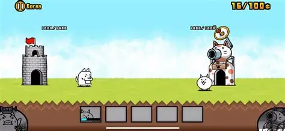
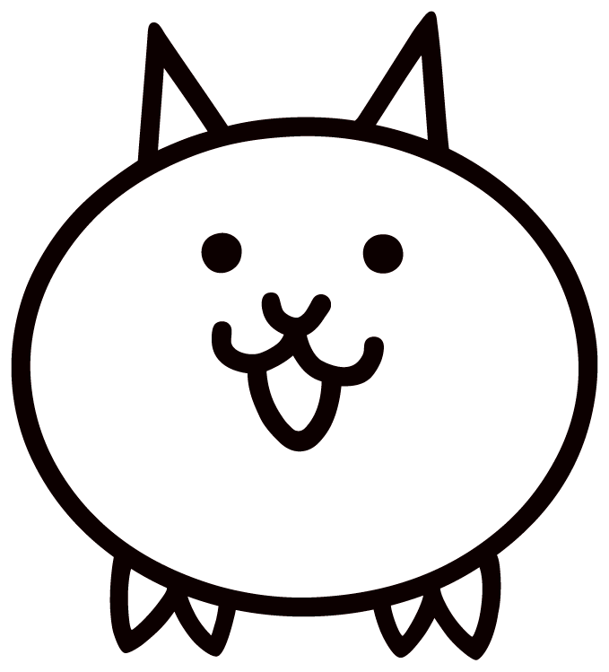

The Battle Cats é um jogo para celular que ficou popular no Japão, sendo criado pela empresa PONOS. Um jogo com base em defender sua torre contra inimigos, usando principalmente gatos para combater contra varios tipos de inimigos.
